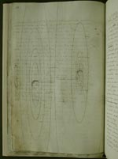
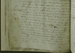
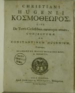
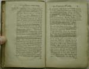
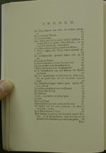

Christiaan Huygens. Facetten van een genie
De manuscripten
8 april 31 mei 2004
Tentoonstelling in de Universiteitsbibliotheek Leiden
6. Tussen wetenschap en science fiction: Cosmotheoros (1698)
De zoektocht naar buitenaards leven is volgens de Eindhovense cabaretier Theo Maassen maar verspilde moeite. Als het al bestaat, zijn er twee mogelijkheden: ruimtewezens zijn òf dommer dan wij, en dus niet interessant, òf intelligenter en dan vinden zij ons vanzelf wel. Een dergelijke grap kan eigenlijk pas gemaakt worden sinds Copernicus ontdekte dat de aarde met de andere planeten om de zon draait, en de mens dus niet het vanzelfsprekende middelpunt van Gods schepping is. In een tijd dat de telescoop net was uitgevonden en ruimtemissies toekomstmuziek, schreef Christiaan Huygens een van de eerste serieuze bespiegelingen over het onderwerp: Cosmotheoros. Het werd pas na zijn dood gepubliceerd, in 1698.
|  | 6.1. Christiani Hugenii
‘Cosmotheoros sive de terris caelestibus earumque ornatu
conjecturae. Manuscript (-1695). [HUG 34 A] –– Autograaf van Christiaan. Het manuscript diende als kopij voor de zetter, die het begin van elk gedrukt vel markeerde met katernsignatuur en paginanummer. Links: tekeningen van aarde (Tella), maan, Jupiter en Saturnus.
|
|  | |
|  | 6.2. Christiani Hugenii Κοσμοθεορος, sive de
terris coelestibus, earumque ornatu, conjecturae ad Constantinum
Hugenium, fratrem: Gulielmo III. Magnae Britanniae Regi, a
secretis. Hagae-Comitum 1698. [2361 J 41] –– Christiaan droeg zijn ‘gissingen over de hemellichamen en hun stoffering’ op aan zijn oudere broer Constantijn. Niet verwonderlijk, want gezamenlijk hadden ze lenzen voor de telescopen geslepen en bij nacht de hemellichamen geobserveerd en besproken. Toen Christiaan in 1695 zijn einde voelde naderen, bepaalde hij dat Constantijn – sinds 1672 secretaris van stadhouder/koning Willem III – moest zorgen voor de publicatie van zijn Cosmotheoros, waarvan de eerste bladen al waren gedrukt. Nadat Constantijn in 1697 zelf overleed, werd de tekstbezorging voltooid door de Leidse hoogleraar Buchardus de Volder. |
|  | 6.3. Chr. Huygens, The celestial worlds
discover’d or conjectures concerning the inhabitants, plants and
productions of the worlds in the planets. London 1698. [2361
F 16] –– Nog in het zelfde jaar werd Cosmotheoros vertaald in het Engels. In 1699 verscheen een Nederlandse vertaling, in 1702 een Franse, in 1703 een Duitse, in 1717 zelfs een Russische. De verhandeling is misschien niet Huygens’ belangrijkste werk, maar wel veruit zijn populairste, getuige de vele herdrukken in de 18e eeuw. |
|  | 6.4. Chr. Huygens, Wereldbeschouwer of
onderzoek over de hemelsche aardklooten, en derzelver cieraad.
Utrecht 1989. [3897 D 13] –– Facsimile-editie van de herdruk Amsterdam 1754. Uitgebracht door Epsilon Uitgaven, met een inleiding van prof.dr. H.A.M. Snelders. Cosmotheoros is onderverdeeld in twee boeken. Uit de inhoudsopgave van het eerste boek wordt goed duidelijk hoe Huygens zijn betoog over het leven op de ‘dwaalstarren’ (planeten) opbouwt. |
| vorige pagina | volgende pagina |